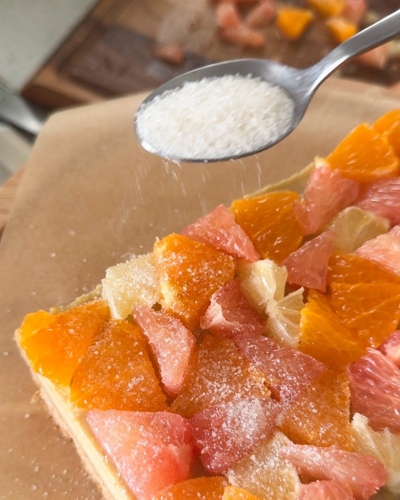
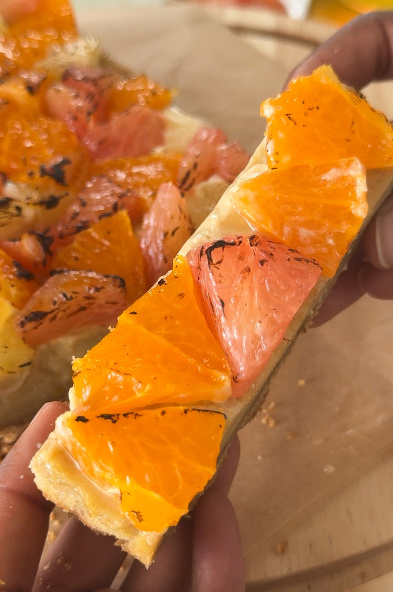

For the crust: Combine all ingredients in a small bowl. Press the mixture into the bottom of the pan. Bake for 10-15 minutes until the top is lightly browned. Set aside to cool.
For the filling: Soak the cashews overnight. Add all of the filling ingredients to a blender and blend until very smooth. Pour the filling on top of the graham cracker crust. Bake in the oven for about 30 minutes, until the sides are a little dry but the center is still a little bit "jiggly". Remove from oven and cool before transferring to the fridge to chill overnight, uncovered.
For the citrus topping: When ready to serve, arrange the slices of citrus on top of the cheesecake. Optional: If you'd like to bring out the flavors of the fruits even more, sprinkle 1 tbsp of sugar on top and carefully char the top with a blow torch.

INGREDIENTS
Graham Cracker Crust
1 c graham cracker crumbs (about 1 sleeve)
3 tbsp vegan butter, melted
1/2 tsp white sugar
Citrus Cheesecake Filling
1 c raw cashews, soaked in water overnight*
1 c coconut cream
1/2 c fresh citrus juice**
1/2 c maple syrup
1/2 tsp vanilla
2 tbsp cornstarch
2 tsp fresh citrus zest***
Citrus Topping
1 sumo orange, supremed and thinly sliced
1 lemon, supremed and thinly sliced
1 grapefruit, supremed and thinly sliced
Optional: 1 tbsp sugar

HOW LONG DOES THIS TAKE TO MAKE?
There are three steps to making this vegan citrus cheesecake at home:
Make the crust, which is about 15 minutes
Prepare the filling, which takes about 10 minutes
Bake the cake, with is about 30 minutes
Refrigerate the cheesecake overnight to set
In total, this recipe will take about an hour to make, not including the overnight rest time.